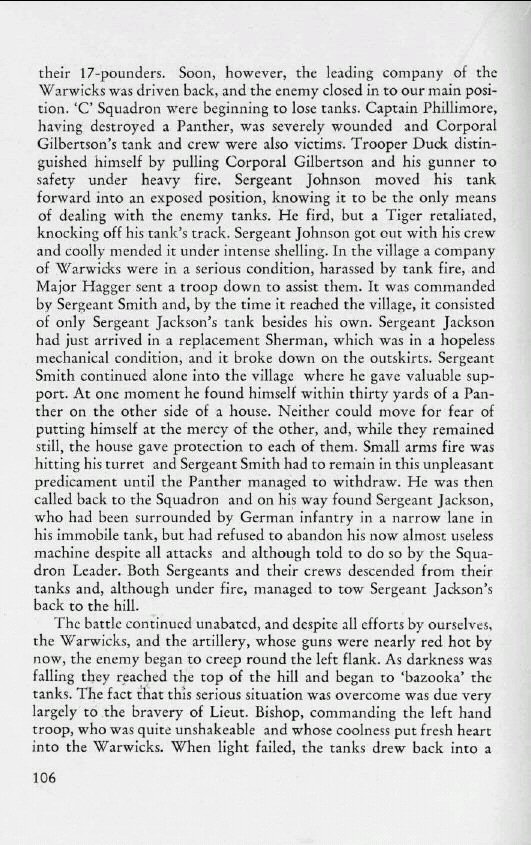

You are here:
Home
>
The Story of the Twenty-Third Hussars
> Page 106
< Prev
Next >

Men
John Hugh Bouchier Phillimore
Robert Cairns Gilbertson
Frank Duck
George Arthur Johnson
Leonard Dunbar Hagger
Donald Newstead Smith
Fred Thorley Jackson
Geoffrey Sydney Charles Bishop
< Prev
Next >